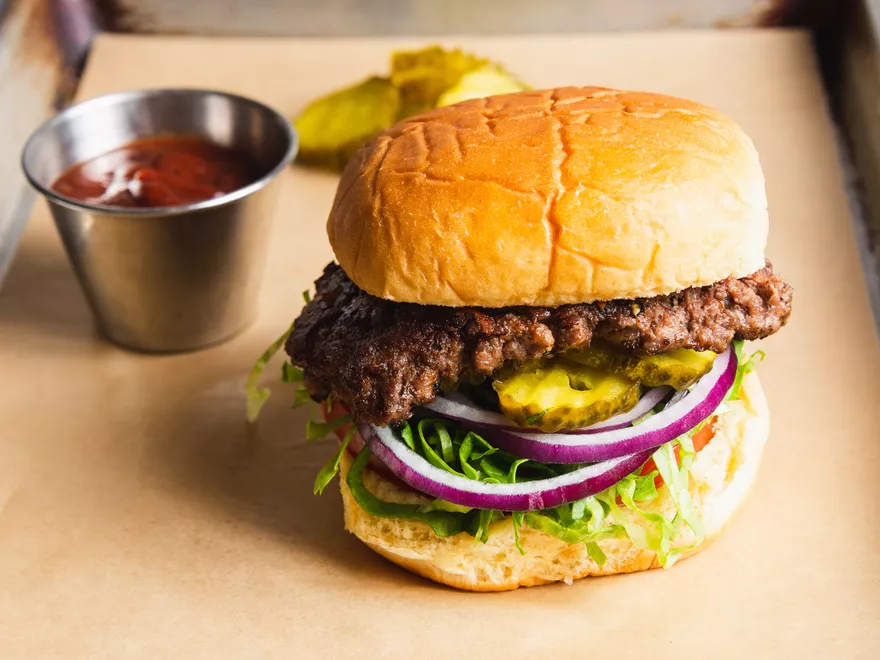

Burger

Description
Flavorful smashed burgers
- 1/2 teaspoon vegetable oil
- 16 to 20 ounces (455g to 570g) ground beef, divided into four 4-ounce portions (see note)
- Kosher salt and freshly ground black pepper
- Cheese slices (if desired)
- Four toasted burger buns
- Toppings and condiments, as desired
Directions
- Add oil to a 12-inch stainless steel, carbon steel, or cast iron skillet and wipe around with a paper towel. Set skillet over medium heat and allow to preheat for about 5 minutes. Meanwhile, gently form each portion of ground beef into a cylindrical puck about 2 inches tall, pressing together just until meat holds its shape without falling apart. Season generously on all sides with salt and pepper.
- Increase heat under skillet to high and heat until skillet is smoking. Add 2 beef pucks to skillet and, using a firm, stiff metal spatula, press down on each one until they're roughly 4 to 4 1/2 inches in diameter and 1/2-inch thick. It helps to use a second spatula to apply downward pressure to the first if you are having trouble smashing them hard enough.
- Cook without moving until a golden brown crust develops, about 1 1/2 minutes. Use the edge of the spatula to carefully scrape up and flip the patties one at a time, making sure to get all browned bits removed from the skillet. If using cheese, add now.
- Continue to cook until patties are cooked to desired doneness—about 30 seconds longer for medium-rare. Transfer patties to toasted buns, topping buns and/or patties as desired, close burgers, and serve immediately. Wipe out skillet with paper towel and repeat process with remaining ground beef pucks.